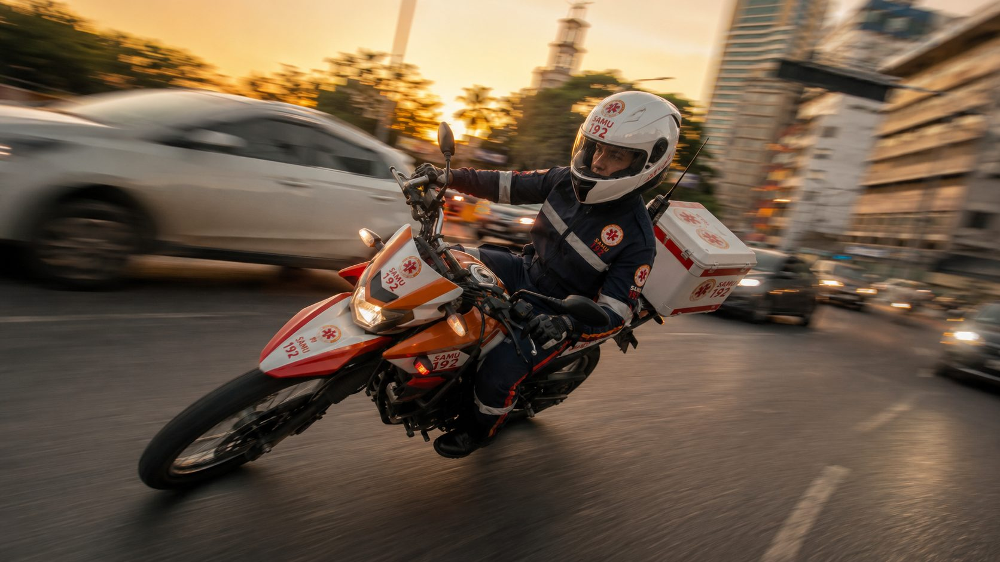
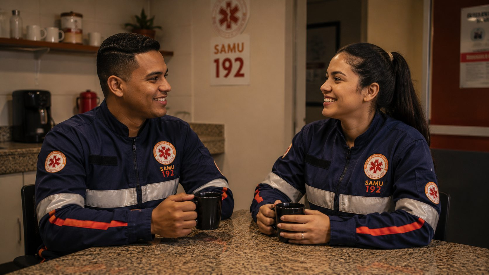

SAMU 192
Gestão completa do Serviço de Atendimento Móvel de Urgência: RH, frota, insumos e operação, aderente às portarias do Ministério da Saúde.
USB · USA · Motolância
Operamos serviços públicos de urgência com padrão privado de excelência — pessoas, frota, insumos e tecnologia sob uma só gestão. Humana na ponta, tech-first no comando.
No pré-hospitalar, a distância entre um número e uma vida cabe em segundos. Nossa gestão existe para não perder nenhum deles.
Fundada em 2016, entregamos soluções completas e integradas para a gestão da saúde através da terceirização. Atuamos em todas as esferas — municípios, estados e consórcios intermunicipais — sempre com uma constante: serviço de qualidade superior, na ponta e no comando.

Equipe própria · CLTAssumimos o serviço de ponta a ponta: contratação e gestão de pessoas, insumos padronizados, frota completa, equipamentos, uniformes, serviços de apoio e capacitação. O ente foca na política pública; a operação fica conosco.
Gestão completa do Serviço de Atendimento Móvel de Urgência: RH, frota, insumos e operação, aderente às portarias do Ministério da Saúde.
USB · USA · MotolânciaEstruturação e operação da regulação médica — TARM, rádio-operação e médico regulador — dimensionada por porte populacional.
Regulação médica 24/7Gestão de Unidades de Pronto Atendimento, integrando equipe assistencial, fluxos e apoio operacional em regime de urgência.
Pronto atendimentoGestão integral ou parcial de unidades hospitalares — do fornecimento de recursos humanos especializados à operação completa.
Gestão integral / parcialManutenção preventiva e corretiva, reativação de viaturas paradas e disponibilidade máxima — sem CAPEX de aquisição para o ente.
Disponibilidade & manutençãoO NEP mantém a atualização contínua das equipes — capacitação técnica, troca de experiência e engajamento. Capacitar para salvar.
NEP · TreinamentoEstamos construindo uma camada de software própria sobre a operação — apps de campo, inteligência clínica e vigilância epidemiológica — para que cada atendimento gere não só socorro, mas também dado, aprendizado e proteção institucional.
Tablet embarcado na viatura, painel do regulador e ficha APH digital. O briefing clínico chega antes da viatura abrir a porta.
Transcrição em tempo real, extração de entidades clínicas e sugestão de protocolo com nível de confiança. A decisão é sempre humana.
Alertas de cluster geográfico, padrões sazonais e um data lake em português médico de emergência — único no Brasil.
Av. Paulista, 1337 · Conj. 32
Bela Vista · São Paulo/SP